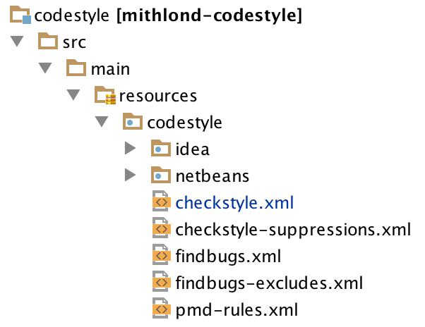

Mithlond: Codestyle overview
 The codestyle project contains configuration for plugins embedded in the maven build and integrated development environments (IDEs). The configuration is roughly divided into two sections:
-
IDE configuration. Configuration documents used to quickly set up integrated development environments. While certainly not impossible to integrate, support for other IDEs is currently lacking. For IDE setup instructions for simple development, refer to the correct IDE link below.
-
Plugin configurations. Checkstyle, PMD and findbugs are used within the build reactor of all Mithlond projects. In contrast to the IDE configuration, which sets up the codestyle definitions for immediate use within an IDE, the plugin definitions found in this section can be used by builds within a Continuous Integration server server such as Jenkins or TravisCI.
Setting up your IDE
Most developers spend the majority of their development time within the Integrated Development Environment. Providing a configuration for the IDE which matches the plugin configuration for Maven’s build cycle greatly simplifies the job of focusing on development instead of setup. Don’t constrain your project to requiring specific IDE:s or plugins unless really necessary. You should be able to build using only maven and push/pull source using Git. The basic job for the IDE is to help reading and editing source files.
IDE-specific setup guides are found below: